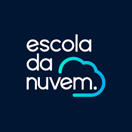
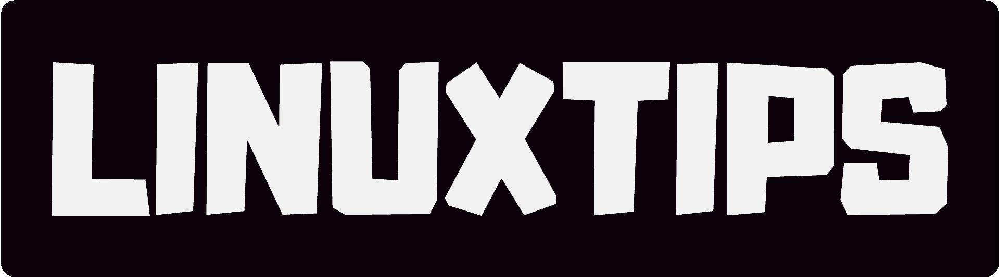
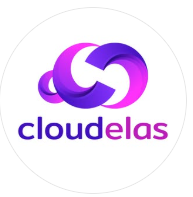

O que me trouxe até aqui?
Estou buscando crescimento, liberdade, realização, estabilidade, curiosidade ou uma nova identidade profissional?
Um blog sobre recomeço, estudos em Cloud Computing, AWS, Inteligência Artificial e construção de uma nova carreira com propósito, técnica e humanidade.
class TransicaoCarreira:
origem = "odontologia"
destino = "cloud computing"
skills = ["AWS", "Python", "IA"]
def recomeçar():
return "um passo por vez ☁"
Aprender, praticar, documentar e evoluir.
Transição é reorganizar sua história, reconhecer habilidades transferíveis, aprender novos fundamentos e construir uma nova identidade profissional aos poucos.
A experiência anterior não desaparece. Ela se transforma em repertório: cuidado com pessoas, comunicação, responsabilidade, escuta, organização, solução de problemas e aprendizado constante.
Uma transição forte começa com clareza. Não é só sobre tecnologia. É sobre o tipo de vida, rotina e futuro profissional que você quer construir.
Estou buscando crescimento, liberdade, realização, estabilidade, curiosidade ou uma nova identidade profissional?
Quais rotinas, ambientes ou limitações da carreira atual já não fazem mais sentido para mim?
Que tipo de aprendizado, oportunidade, autonomia e impacto eu imagino ao entrar em tecnologia?
Minha jornada precisa respeitar minha vida atual. Consistência pequena é melhor que excesso impossível.
A tecnologia precisa de pessoas técnicas, mas também precisa de pessoas humanas, organizadas, comunicativas e capazes de resolver problemas reais.
Explicar, ouvir, orientar e traduzir problemas são habilidades importantes em times técnicos.
Planejamento, rotina e atenção a detalhes ajudam em estudos, documentação e projetos.
Empatia e responsabilidade fortalecem suporte, colaboração, liderança e relacionamento com clientes.
Investigar causas, testar hipóteses e buscar soluções também faz parte do pensamento técnico.
Quem entende rotina, fluxo e melhoria contínua se adapta melhor a ambientes de tecnologia.
Cloud e IA exigem curiosidade, paciência e prática contínua.
A jornada técnica ganha força quando deixa de ser abstrata e começa a aparecer em pequenos hábitos: estudar, testar, documentar e compartilhar.
Python, lógica e pequenos scripts para treinar pensamento computacional.
Serviços, redes, identidade e boas práticas para entender ambientes modernos.
Inteligência artificial aplicada com responsabilidade, curiosidade e visão prática.
Uma timeline simples para mostrar evolução, estudos, desafios e próximos passos.
Reconhecer o desejo de mudança e transformar inquietação em plano.
Construir pensamento lógico e praticar fundamentos de programação.
Estudar serviços, redes, segurança, armazenamento e identidade.
Conectar cloud, dados e inteligência artificial de forma prática e responsável.
Aprender junto, compartilhar conhecimento e fortalecer presença em tecnologia.
Uma curadoria inicial para estudar com direção, sem se perder no excesso de informação.

Programa gratuito da AWS para iniciantes em Cloud Computing.
Conhecer →
Capacitação gratuita em nuvem, certificação e empregabilidade.
Conhecer →
Conteúdos sobre Linux, DevOps, containers e cloud.
Conhecer →
Comunidade para mulheres em cloud computing.
Conhecer →Trilhas oficiais para Azure, dados, segurança e IA.
Conhecer →Laboratórios práticos para aprender Google Cloud.
Conhecer →Sou Ana Karina e criei o Do Consultório à Nuvem para compartilhar minha transição da odontologia para Cloud Computing e Inteligência Artificial.
Este espaço nasceu para apoiar pessoas que querem mudar de área, mas precisam de clareza, acolhimento, recursos confiáveis e uma sequência possível para começar.
“Recomeçar não é abandonar quem você foi. É usar sua história como base para construir quem você está se tornando.”
Se minha jornada conversa com a sua, vamos continuar essa conversa no LinkedIn. Compartilho aprendizados sobre transição de carreira, Cloud Computing e evolução em tecnologia.
"Recomeçar exige coragem. Permanecer exige consistência." ☁️